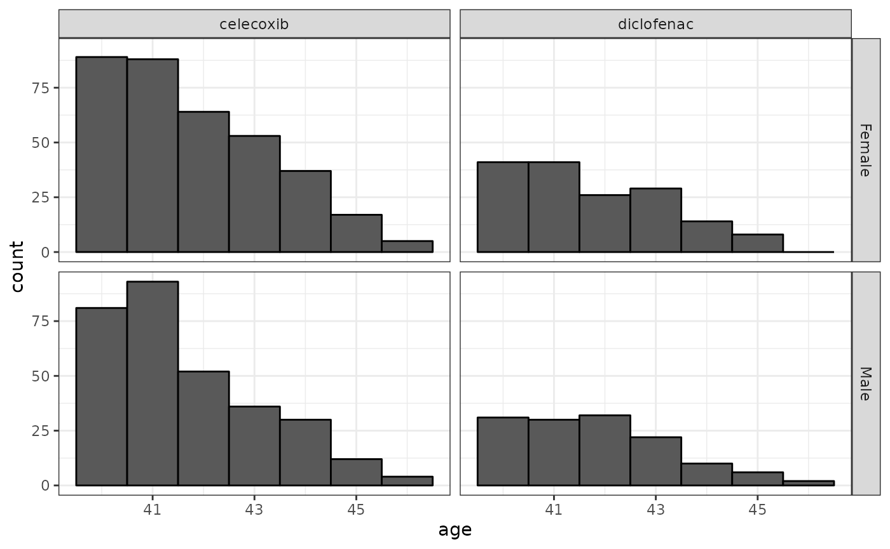
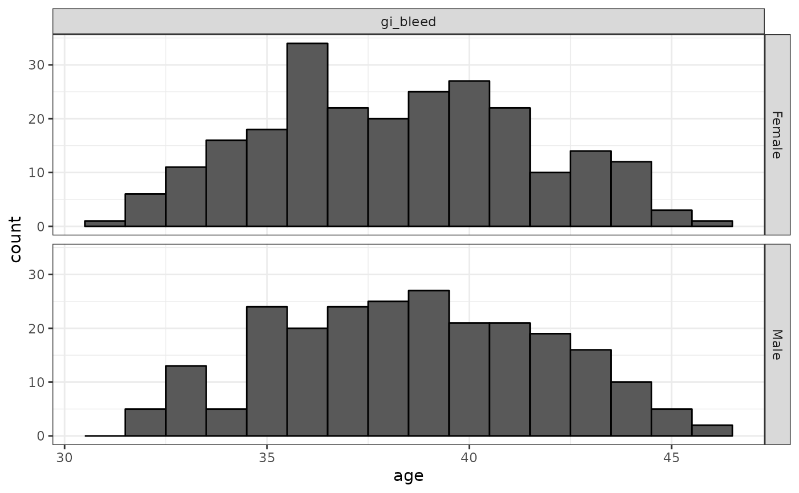
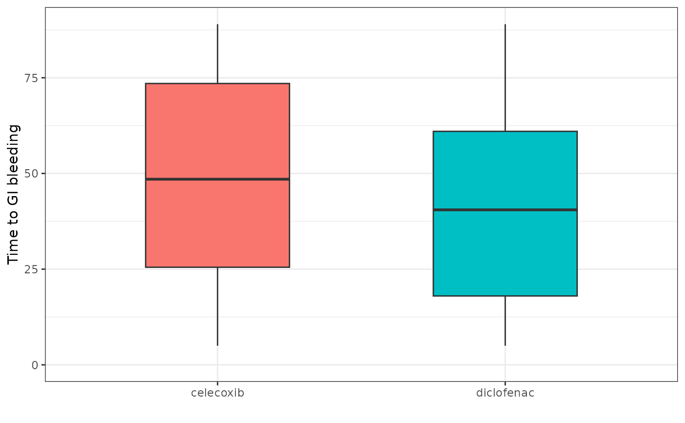

Using PatientProfiles for analysis
ExampleAnalysis.RmdSet up
Let’s start by loading required packages and creating a cdm reference to the Eunomia dataset.
library(DBI)
library(duckdb)
library(CDMConnector)
library(CodelistGenerator)
library(dplyr)
library(PatientProfiles)
library(ggplot2)
con <- DBI::dbConnect(duckdb::duckdb(), eunomia_dir())
#> attempting to extract and load /tmp/RtmpS0QCg8/GiBleed_5.3.zip
cdm <- CDMConnector::cdm_from_con(
con = con,
cdm_schema = "main",
write_schema = "main"
)Create bespoke cohorts
To start, we’ll define two drug cohorts. These cohorts will include drug exposures of celecoxib and diclofenac, respectively. To keep things simple each cohort entry will correspond to a drug exposure record (i.e. an individual can enter the cohort multiple times and we won’t concatenate any records). We’ll include these two cohorts in the same cohort table, with a cohort definition id of 1 for celecoxib and 2 for diclofenac.
For both cohorts we’ll also require that those included are aged
between 40 and 50. The addAge function will facilitate
incorporating this requirement.
celecoxibCodes <- getDescendants(cdm, conceptId = 1118084)
diclofenacCodes <- getDescendants(cdm, conceptId = 1124300)
# celecoxib
cdm$celecoxib <- cdm$drug_era %>%
inner_join(
celecoxibCodes %>%
select(concept_id),
by = c("drug_concept_id" = "concept_id"),
copy = TRUE
) %>%
addAge(cdm, indexDate = "drug_era_start_date") %>%
filter(age >= 40 & age <= 50) %>%
rename(
"subject_id" = "person_id",
"cohort_start_date" = "drug_era_start_date",
"cohort_end_date" = "drug_era_end_date"
) %>%
mutate(cohort_definition_id = 1L) %>%
select(
"cohort_definition_id", "subject_id",
"cohort_start_date", "cohort_end_date"
) %>%
compute()
# diclofenac
cdm$diclofenac <- cdm$drug_era %>%
inner_join(
diclofenacCodes %>%
select(concept_id),
by = c("drug_concept_id" = "concept_id"),
copy = TRUE
) %>%
addAge(cdm, indexDate = "drug_era_start_date") %>%
filter(age >= 40 & age <= 50) %>%
rename(
"subject_id" = "person_id",
"cohort_start_date" = "drug_era_start_date",
"cohort_end_date" = "drug_era_end_date"
) %>%
mutate(cohort_definition_id = 2L) %>%
select(
"cohort_definition_id", "subject_id",
"cohort_start_date", "cohort_end_date"
) %>%
compute()
cdm$exposure_cohort <- union_all(
cdm$celecoxib,
cdm$diclofenac
) %>%
compute()
cdm$exposure_cohort <- newGeneratedCohortSet(cdm$exposure_cohort)As well as our two drug cohorts, we’ll define a cohort of people with a condition occurrence of gastrointestinal (GI) bleeding.
giBleedCodes <- getDescendants(cdm, conceptId = 192671)
# gi_bleed
cdm$gi_bleed <- cdm$condition_occurrence %>%
inner_join(
giBleedCodes %>%
select(concept_id),
by = c("condition_concept_id" = "concept_id"),
copy = TRUE
) %>%
rename(
"subject_id" = "person_id",
"cohort_start_date" = "condition_start_date"
) %>%
mutate(cohort_end_date = cohort_start_date) %>%
mutate(cohort_definition_id = 1L) %>%
select(
"cohort_definition_id", "subject_id",
"cohort_start_date", "cohort_end_date"
) %>%
compute()
cdm$gi_bleed <- newGeneratedCohortSet(cdm$gi_bleed)Summarising cohort characteristics
We can use the addDemographics to help describe the
characteristics of our cohorts
cdm$exposure_cohort %>%
addDemographics(cdm) %>%
collect() %>%
mutate(name = case_when(
cohort_definition_id == 1 ~ "celecoxib",
cohort_definition_id == 2 ~ "diclofenac",
.default = as.character(cohort_definition_id)
)) %>%
collect() %>%
ggplot() +
facet_grid(sex ~ name) +
geom_histogram(aes(age),
binwidth = 1,
colour = "black"
) +
theme_bw()
cdm$gi_bleed %>%
addDemographics(cdm) %>%
collect() %>%
mutate(name = case_when(
cohort_definition_id == 1 ~ "gi_bleed",
.default = as.character(cohort_definition_id)
)) %>%
collect() %>%
ggplot() +
facet_grid(sex ~ name) +
geom_histogram(aes(age),
binwidth = 1,
colour = "black"
) +
theme_bw()
Cohort intersection
We can also see whether individuals had GI bleeding in some time
period relative to their cohort start date using the
flagCohortPresence function. In this case we’ll look at two
time periods, before their cohort start date and after.
cdm$exposure_cohort <- cdm$exposure_cohort %>%
addCohortIntersectFlag(
cdm = cdm,
targetCohortTable = "gi_bleed",
indexDate = "cohort_start_date",
window = c(-Inf, -1),
nameStyle = "gi_bleed_history"
) %>%
addCohortIntersectFlag(
cdm = cdm,
targetCohortTable = "gi_bleed",
indexDate = "cohort_start_date",
window = c(0, Inf),
nameStyle = "gi_bleed_outcome"
)
cdm$exposure_cohort %>%
group_by(gi_bleed_history, gi_bleed_outcome) %>%
count() %>%
collect()
#> # A tibble: 2 × 3
#> # Groups: gi_bleed_history, gi_bleed_outcome [2]
#> gi_bleed_history gi_bleed_outcome n
#> <dbl> <dbl> <dbl>
#> 1 0 0 777
#> 2 0 1 176We can also see time to GI bleeding using the
timeToCohort
cdm$exposure_cohort %>%
addCohortIntersectDays(
cdm = cdm,
targetCohortTable = "gi_bleed",
window = c(0, Inf),
nameStyle = "time_to_event"
) %>%
mutate(name = case_when(
cohort_definition_id == 1 ~ "celecoxib",
cohort_definition_id == 2 ~ "diclofenac",
.default = as.character(cohort_definition_id)
)) %>%
group_by(name) %>%
summarise(
min_time_to_event = min(time_to_event, na.rm = TRUE),
q25_time_to_event = quantile(time_to_event, 0.25, na.rm = TRUE),
median_time_to_event = median(time_to_event, na.rm = TRUE),
q75_time_to_event = quantile(time_to_event, 0.75, na.rm = TRUE),
max_time_to_event = max(time_to_event, na.rm = TRUE)
) %>%
collect() %>%
ggplot(aes(
x = name, group = name,
fill = name
)) +
geom_boxplot(
aes(
lower = q25_time_to_event,
upper = q75_time_to_event,
middle = median_time_to_event,
ymin = min_time_to_event,
ymax = max_time_to_event
),
stat = "identity", width = 0.5
) +
theme_bw() +
theme(legend.position = "none") +
ylim(0, NA) +
xlab("") +
ylab("Time to GI bleeding")